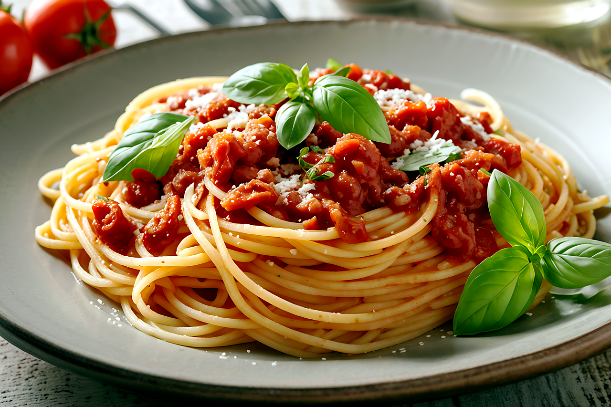

Spaghetti-Bolognese

- 600g Hackfleisch (gemischt oder nur Rinderhackfleisch)
- 500g Spaghetti
- 2 Dosen Schältomaten (à 400g)
- 200ml Rinderbrühe
- 100ml Rotwein
- 1 Zwiebel
- 1 Knoblauchzehe
- 2 Möhren
- 2 Stangen Staudensellerie
- 1 EL Butter
- 2 El Olivenöl
- 1 Knoblauchzehe
- 1 Lorbeerblatt
- 5 Zweige Thymian
- Salz
- Pfeffer
- Paprikapulver
- Zucker
Zubereitung
Zwiebel und Knoblauch schälen und fein hacken. Möhren schälen, fein würfeln. Sellerie putzen, waschen, in feine Würfel schneiden. Butter und 1 EL Öl in einer Pfanne erhitzen. Erst die Möhren darin zwei Minuten anbraten. Dann Zwiebeln und Sellerie dazugeben und das Gemüse ca. 10 Minuten bei schwacher bis mittlerer Hitze braten. Knoblauch hinzufügen und 2 Minuten andünsten. Gemüse herausnehmen und beiseite stellen. 1 EL Öl in einen großen Topf geben, Hack darin krümelig braten. Mit Paprika, Zucker, Salz und Pfeffer würzen. Lorbeer, Thymian und das gebratene Gemüse zugeben. Mit Wein ablöschen. Tomaten und Brühe zugeben und bei schwacher Hitze ca. 2 Stunden schmoren. Mit Salz und Pfeffer abschmecken. Lorbeer und Thymian herausnehmen. Spaghetti nach Packungsanweisung kochen. Abgießen und mit der Soße servieren.
Rezept erstellt von
 Marlon
Marlon